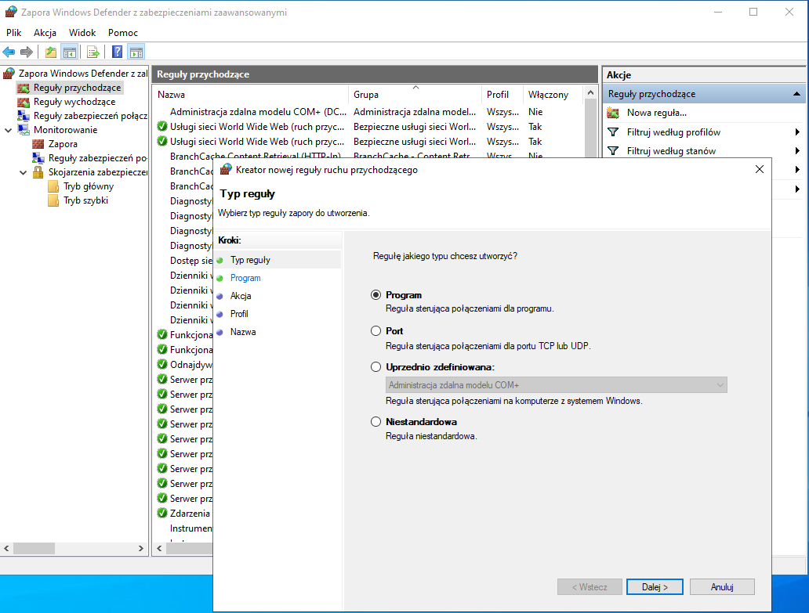
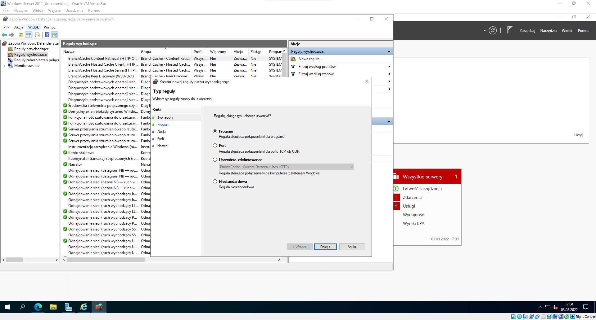
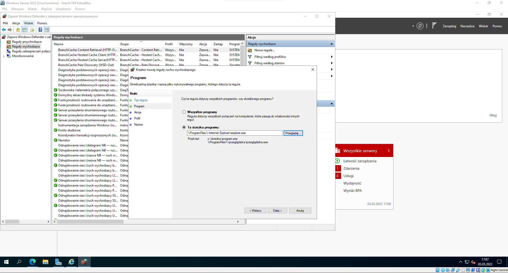
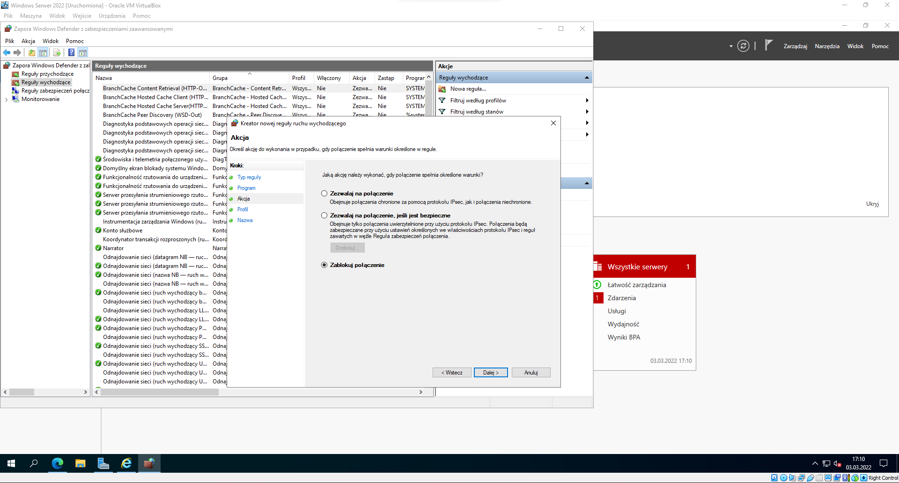
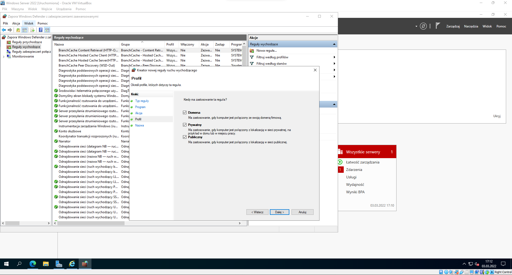
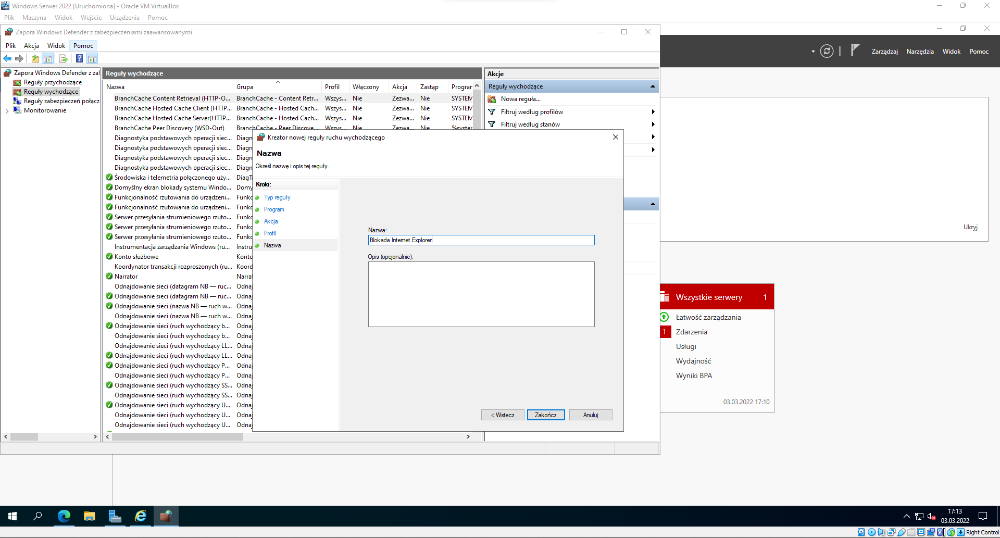
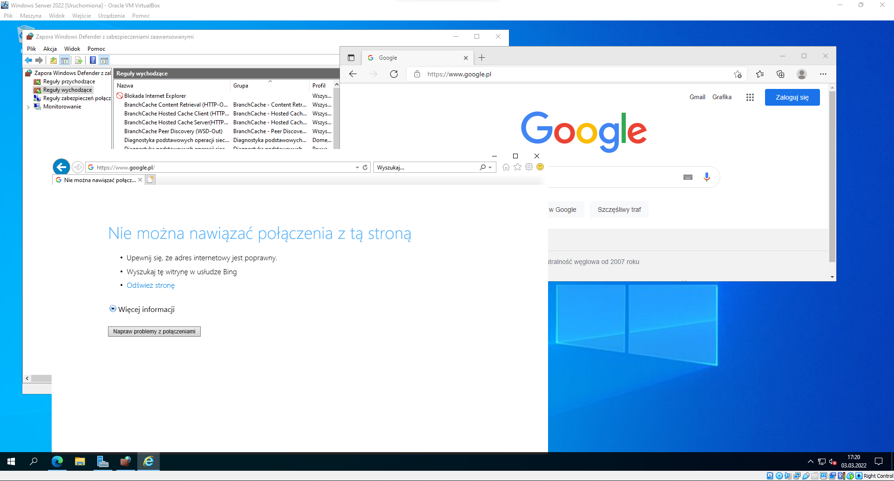
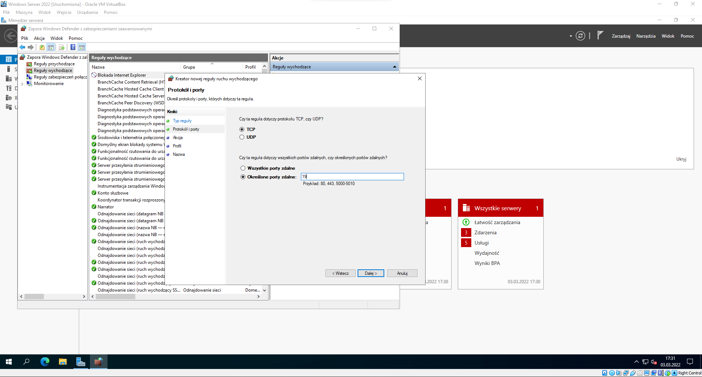

Reguły w Zaporze Sieciowej
Reguła to prostym językiem mówiąc jest zbiorem pewnych postępowań, z którymi ona współpracuje przy sprawdzaniu danego pakietu w tym przypadku.
W Firewallu to właśnie reguły definiują nam, czy dany pakiet zostanie przepuszczony, czy zablokowany -> A więc stanowią one główne działanie Zapory Sieciowej.
Warto podkreślić, że reguły są mocno powiązane z połączeniami przychodzącymi i wychodzącymi (co widać na poniższym zdjęciu na lewo).
- Połączenia Przychodzące to połączenia, które chcą nawiązać połączenie z naszym komputerem z poza tego komputera. Możemy zaliczyć do nich np. protokół SSH.
- Połączenia Wychodzące to połączenia, które komputer chce nawiązać z innym urządzeniem z jakiejkolwiek sieci. Możemy zaliczyć do nich np. Blokadę Programów chociażby Przeglądarek Internetowych.

Powyżej możemy zauważyć okno z ustawieniami reguły. A jakich typów reguły możemy tworzyć?
- Programu - Dopuszczają przesyłanie pakietów przez wybrany program, identyfikowany przez ścieżkę dostępu i plik startowy.
- Portu - Dopuszczają przesyłanie pakietów za pośrednictwem określonego numeru portu albo ich zakresu w protokole TCP lub UDP.
- Predefiniowane - Pozwalają aktywować gotowe grupy reguł zezwalające wybranym funkcjom systemu na dostęp do sieci np. udostępnianie plików, drukarki.
- Niestandardowe - Reguły, których nie utworzymy z użyciem reguł innych typów (Takie połączenie powyższych opcji w jedno).
Poniżej znajdziecie przykłady, jak ustawić regułę, która będzie blokować dostępu do programu, zaś druga zablokuje dany port.
Reguła blokująca program
1. Wybieramy rodzaj reguły. W tym wypadku wybieramy Program.

2. Wyszukujemy ścieżki do programu, który chcemy zablokować. Jak widać, możemy także wszystkie programy zablokować.

3. Tutaj zaznaczamy, czy chcemy zezwolić na połączenie, czy zablokować je. My oczywiście robimy to drugie.

4. W tym kroku zaznaczamy, w jakich profilach ta reguła ma obowiązywać.

5. Pozostaje nam jeszcze nazwać tą regułę i ewentualnie dodać opis. I w sumie to koniec.

6. Jak widzimy, reguła działa i nie zezwala na połączenie w IE, zaś w Edge'u już tak.

7. Co do portów, to robimy dokładnie tak samo z tą różnicą, że w 1 kroku zaznaczamy opcję Port, a później wybieramy port lub ich zakres, na których chcemy ustawić regułę.

Warto dodać, że dla każdej reguły możemy skonfigurować, który komputer, bądź użytkownik będzie korzystać z tej ustalonej reguły. Czasami jest to przydatne...
Jak widzimy, tworzenie reguł nie jest trudne, jednak trzeba to znać, gdyż każdy administrator powinien posiadać zaporę we własnej sieci, a wiemy, że czasami przez zaporę nie chce coś nam pingować itp, a w prawdziwej sieci nie wyłączymy zapory, aby działało. Tak więc ustawiamy do takich celów reguły, które pozwolą jednym na wejście, zaś innym na wyjście.